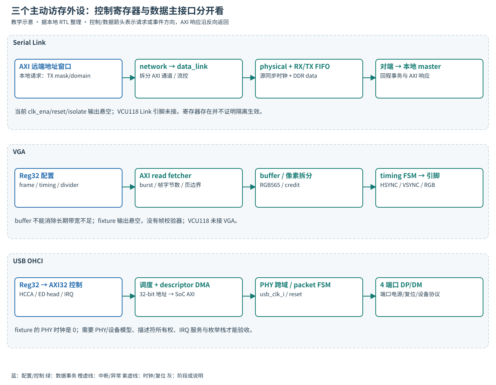

READ · TRACE · BUILD · EXPLAIN
16 · Serial Link、VGA 与 USB
剖析三个主动访存的接口，以及当前环境离端到端验证的距离。
为Serial Link、VGA和USB分别画出配置口、数据口、外部协议与完成判据；识别当前缺失的时钟/模型/驱动。前置：AXI、DMA所有权和中断。场景：这些模块已展开，却无法完成任何用户可见传输。

Serial Link 事务传输与验证
本模块不是UART。network层封装AXI通道信息，data_link层做链路流控，physical层产生/接收源同步DDR数据。TX入口把本地远端窗口0x1_00000000..0x1_ffffffff的地址按mask0xffffffff/domain0映射到对端低32位；RX反过来作为本地AXI master访问本地地址。请求和响应都要穿越链路，有吞吐和回压，不能按无延迟导线理解。
| 0x03006000 + 偏移 | 含义 | 当前集成注意 |
|---|---|---|
| 0x00 CTRL | clk_ena0、reset_n1、axi_in_isolate8、axi_out_isolate9 | 这些输出在cheshire_soc悬空；不能凭写此寄存器证明真正关钟/复位/隔离 |
| 0x04 ISOLATED | 两侧隔离状态 | 顶层isolated_i绑0；不会反映一个未实现的隔离器 |
| 0x08/0c/10 | TX_PHY_CLK_DIV/START/END | 转发时钟分频/边沿位置；默认8、2、6，必须与接收时序/采样约束一起核对 |
| 0x14..30 | RAW_MODE、通道选择、RX有效/数据、TX FIFO/使能 | raw模式绕过普通AXI事务用途，不与AXI业务同时试写；读DATA有副作用 |
| 0x34 | FLOW_CONTROL_FIFO_CLEAR | 清流控状态须在双方协调停机后；不能作为任意AXI挂死的无损恢复键 |
配置字段 SlinkMaxClkDiv 在cheshire_cfg_t只有10bit，默认赋1024会截断；本地实例使用独立包常量SlinkMaxClkDiv=1024。检查时要区分“结构体中的数”和“实际传入模块的参数”。这个事实也说明索引文档不能代替展开输入。
L1，已有VIP对端上的装载路线对比。先用相同array ELF完成JTAG基线，再在第05章Questa运行命令中只把 set PRELMODE 0 改为 set PRELMODE 1；VCS只改 +PRELMODE=1。两个入口来自tb_cheshire_soc的case，不是工具原生参数。日志另存slink-simulate.log；仍用墙钟300秒、Questa目标100ms。预期[SLINK]装载/启动/结束成功及相同数组结果。旧check_run只接受JTAG标记，需用人工核对或后续明确支持SLINK的检查器，不能强行沿用判PASS。未运行
缺结果先查两端clock/reset、链路fifo/流控、AXI地址变换、scratch启动标志，然后查程序。VCU118接收clock绑1、data绑0、输出悬空，不能用板上同一命令做L1。raw-mode硬件练习需独立链路测试台，当前不提供虚构的裸机raw驱动。
VGA 帧缓冲读取与像素输出
显示模块由axi_vga_reg_top、axi_vga_fetcher、缓冲/credit和axi_vga_timing_fsm组成。fetcher按frame_size字节循环取数，拆出blue/green/red；当前5/6/5位共16bit。它是只读AXI master，AW/W绑零，VGA错误跟踪的write IRQ不是帧完成通知。显示端按同步时序消费像素，不会像普通AXI目标一样无限等内存。
| 0x03007000 + 偏移 | 配置 |
|---|---|
| 0x00 CONTROL | ENABLE0、HSYNC_POL1、VSYNC_POL2 |
| 0x04 CLK_DIV | 0按1处理；clk_cnt产生FSM使能，像素节奏≈f_sys/div |
| 0x08/0c/10/14 | 水平visible/front porch/sync/back porch |
| 0x18/1c/20/24 | 垂直visible/front porch/sync/back porch |
| 0x28/2c START_ADDR | 帧缓冲地址low/high；遵守缓冲区所有权 |
| 0x30 FRAME_SIZE | 帧字节数；RGB565的640×480为614400字节，已超过128KiB SPM |
| 0x34 BURST_LEN | fetcher直接赋AXI ARLEN，因此16beats编码15，不是写16 |
建议驱动次序：disable → 准备可见的帧缓冲 → 写时序、divider、base、size、burst → fence → enable；边运行边改配置的生效边界需从FSM验证，不能默认有原子换帧。640×480×2×60≈36.864MB/s是只含可见像素的平均有效读带宽示例；消隐/突发效率/延迟裕量另算。50MHz/div2得到25MHz只是教学节奏，不能冒充标准显示模式实测。
V1，源码练习。仓库根执行以下命令，产物是“寄存器单位→计算公式→预期波形”的记录：
rg -n 'clk_div|clk_cnt|i_axi_vga_timing_fsm|frame_size' .bender/git/checkouts/axi_vga-74c838b44ce780d5/src/axi_vga.sv
rg -n 'remaining_len|burst_len_q|ar.len|blue_o|green_o|red_o' .bender/git/checkouts/axi_vga-74c838b44ce780d5/src/axi_vga_fetcher.svV2，尚缺观察环境。独立TB接出HSYNC/VSYNC/RGB并制作帧校验器，配置已知彩条，限制至少两帧的仿真窗口，验证总行/列、颜色、地址回卷和内存回压下的欠载。现fixture输出悬空，VCU118没有USE_VGA；不提供“打开VGA即可显示”的假命令。缺帧日志时先看AR/R进度，再看credit/valid，再看timing计数。
USB OHCI 寄存器与内存描述符
OHCI（Open Host Controller Interface，开放主机控制器接口）让软件在内存中组织HCCA（主控制器通信区）、ED（端点描述符）和TD（传输描述符）。控制器通过DMA遍历工作，PHY传包，完成后更新描述符/完成链并产生IRQ；不等于CPU往“USB TX寄存器”写几个字节就能枚举设备。
spinal_usb_ohci 将Reg32转成控制AXI32，将32-bit DMA数据宽度转换为SoC AXI宽度，地址按mask/domain扩展；其控制器只能原生寻址低32位范围。系统侧和PHY侧有独立时钟/复位，4组DP/DM方向信号。默认地址domain=0，所以描述符与buffer不要放到4GiB以上期待自动可达。
| 0x03008000 + 偏移 | 生成RTL中的寄存器/字段 | 软件意义 |
|---|---|---|
| 0x00 | HcRevision，REV=0x10 | 只读身份探测；不是枚举通过 |
| 0x04 | HcControl：PLE2、IE3、CLE4、BLE5、HCFS[7:6] | 列表使能与控制器状态；HCFS才是状态机模式，不是随意开bit0 |
| 0x08 | HcCommandStatus：soft reset0、CLF1、BLF2 | 复位及通知有新的control/bulk列表工作 |
| 0x0c/10/14 | InterruptStatus / Enable / Disable；WDH1、UE4、RHSC6、MIE31 | 状态、使能/禁用是不同写语义；OHCI IRQ接PLIC19 |
| 0x18 | HCCA [31:8] | 256字节对齐的通信区基址 |
| 0x20/24、0x28/2c、0x30 | ControlHead/CurrentED、BulkHead/CurrentED、DoneHead | ED地址字段低4位不保存，描述符须正确对齐；完成链需软件回收 |
| 0x34/38/3c/40/44 | FrameInterval/Remaining/Number、PeriodicStart、LSThreshold | 帧调度参数与观测 |
| 0x48/4c/50 | RootHubDescriptorA/B、RootHubStatus | 端口数量/供电/变化状态 |
| 0x54/58/5c/60 | 4个RootHubPortStatus | 连接、使能、reset、供电与变化位；读写位含义不完全相同 |
驱动实现路线：先确认PHY时钟/复位与供电接口 → 软复位并等待完成 → 分配对齐、DMA可见的HCCA/ED/TD并清零 → 初始化帧参数/根集线器 → 端口复位、确认连接 → 创建默认地址控制传输 → SET_ADDRESS/读取描述符 → 检查TD完成状态和实际长度 → 服务WDH/RHSC/UE并归还缓冲区。每一步都需deadline；CPU写描述符后交所有权，设备完成后CPU失效/排序并读取，不能只volatile化结构体。
fixture的usb_clk_i=0、usb_rst_ni=1、DP/DM输入=0；VCU118关闭USE_USB。仓库有OHCI硬件，不包含本教材可直接复用的完整裸机枚举驱动/设备模型。未提供设备响应模型、描述符格式/栈验收前，本章代码只到接口审读。后续最小用例必须包含一个控制传输成功、断连/超时失败、TD内容/长度校验及IRQ清除；读Revision不抵扣这些要求。
U1源码练习，工作目录仓库根：
rg -n 'soc_clk_i|phy_clk_i|AxiAddrMask|reg_to_axi|axi_dw_converter' hw/future/spinal_usb_ohci.sv
rg -n 'case\(io_ctrl_cmd_payload_fragment_address\)|reg_hcRevision_REV =|reg_hcHCCA_HCCA_reg|reg_hcInterrupt_WDH_status' hw/future/UsbOhciAxi4.v
rg -n 'usb_clk_i|usb_rst_ni|usb_dp_i' target/sim/src/fixture_cheshire_soc.sv成功判据：能列清控制域/PHY域、DMA地址限制、两个IRQ原因、描述符所有权；无运行日志就是未验证，不写“USB功能正常”。
1. Link CTRL写isolate=1后能立即断电吗？
当前集成没有消费isolate输出，且状态输入绑零；既不能证明隔离，也没有已排空/电源序列保证。
2. VGA帧缓冲可以放整个640×480 RGB565画面到默认SPM吗？
不行，需要614400字节，超过128KiB，且SPM还存代码/栈。应使用验证过的外部内存并定义cache契约。
3. USB HCCA地址低8位为什么不出现在寄存器里？
该通信区要求256字节对齐，控制器保存高位。传入未对齐地址不会创造一个支持任意对齐的描述符区。